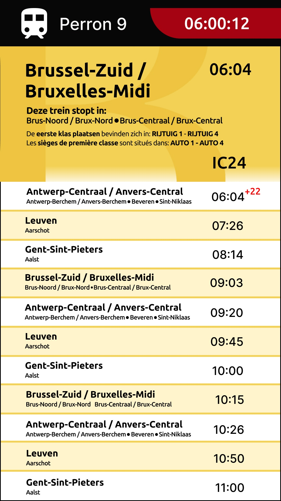

Lesweek 6
Focus: Overzichtelijk HTML-ontwerpdocument, consistent kleurgebruik & eerste digitale prototype van “Lost in Tra(i)nslation”
Uitvoering
1. Structuur HTML
-
Basisdocument opgezet met
<!DOCTYPE html>en correcte<head>-meta-instellingen. -
lang="nl"toegevoegd voor toegankelijkheid (schermlezers gebruiken juiste taal en accenten). - Navigatie toegevoegd met links naar alle weken, zodat eerdere documentatie snel toegankelijk blijft.
-
<header>gebruikt voor sidebar-navigatie en<main>voor inhoud van de week. -
<footer>met auteursnaam en jaar voor consistentie.
2. CSS-styling
- Fonts: Roboto via Google Fonts voor leesbare en moderne typografie.
- Basis layout: Flexbox gebruikt voor hoofdscherm met sidebar en main content.
- Container: Max-width en padding ingesteld voor comfortabele leesbaarheid.
- Navigatie: Column layout, hover-effecten en visuele hiërarchie voor makkelijk herkenning van actieve links.
- Kleuren voorlopig neutraal (zwart, wit, lichtgrijs) zodat focus op inhoud blijft; Belgische vlagkleuren volgen in volgende stappen.
3. Prototype focus
-
Titel en subtitels gestructureerd (
h1,h2,h3) voor hiërarchie en overzicht. - Eerste sectie “Prototyping Tools” met subsectie “Lost in Tra(i)nslation” toegevoegd als startpunt voor inhoud.
4. Inzichten
- Zelf HTML/CSS opzetten geeft maximale controle over opmaak, structuur en navigatie.
- Sidebar navigatie helpt om eerdere weken snel te bereiken en overzicht te bewaren.
- Basis CSS reset en container spacing zorgen dat document consistent en rustig oogt.
- Flexbox maakt layout flexibel, zodat later elementen zoals schermvoorbeelden of kleursecties eenvoudig kunnen worden toegevoegd.



UX/UI-vragen
- Is de navigatie intuïtief genoeg voor een lezer die alle weken wil doorlopen?
- Zijn typografie en spacing voldoende om content snel te scannen?
- Hoe kan kleur toegevoegd worden zonder het overzicht te verstoren?
Volgende stappen
- Toevoegen van echte schermvoorbeelden en screenshots van wagon-indelingen.
- Integratie van Belgische vlagkleuren in headers, buttons of iconen voor consistent thema.
- Interactieve elementen testen in browser (links, hover-states, scrollgedrag).
- Eventueel iconen en labels toevoegen in HTML om functionaliteit van schermen beter uit te leggen.